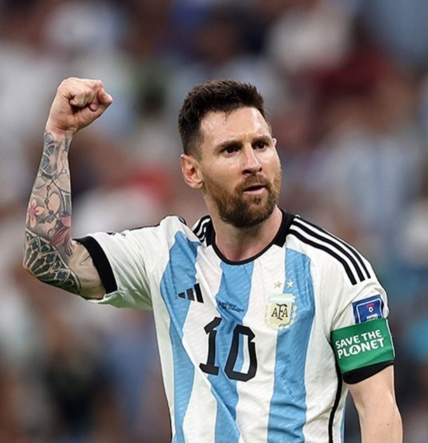
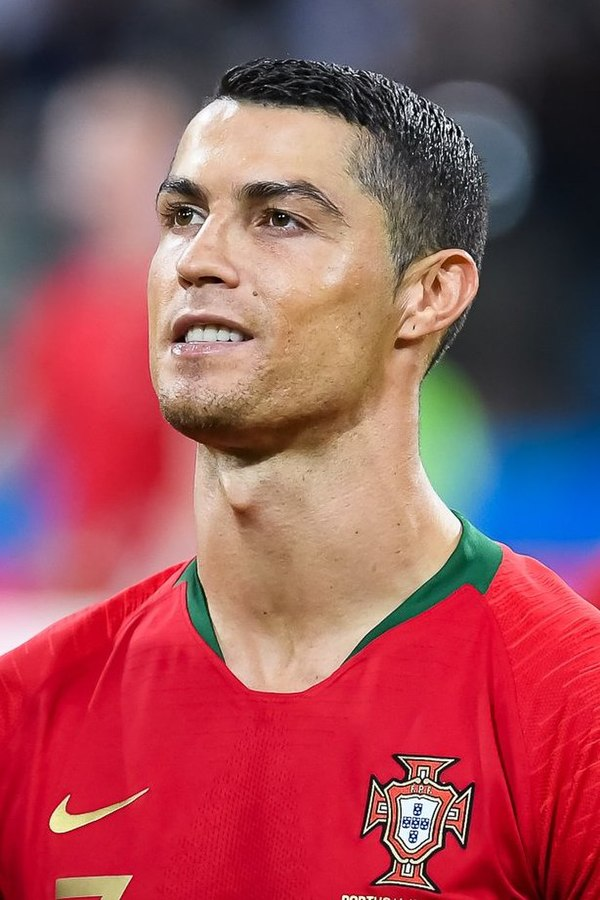

Lionel Andrés "Leo" Messi is an Argentine professional footballer who plays as a forward for and captains both Major League Soccer club Inter Miami and the Argentina national team. Learn More...

Cristiano Ronaldo dos Santos Aveiro GOIH ComM is a Portuguese professional footballer who plays as a forward for and captains both Saudi Pro League club Al Nassr and the Portugal national team. See More
| Players | Messi | Ronaldo |
|---|---|---|
| Goal | 837 | 895 |
| Assets | 373 | 215 |
Who Is The Best ?
Your Name:
Who's Player you support?
why is your favorite?
If you are 18+. click the I am not roboat option and select you